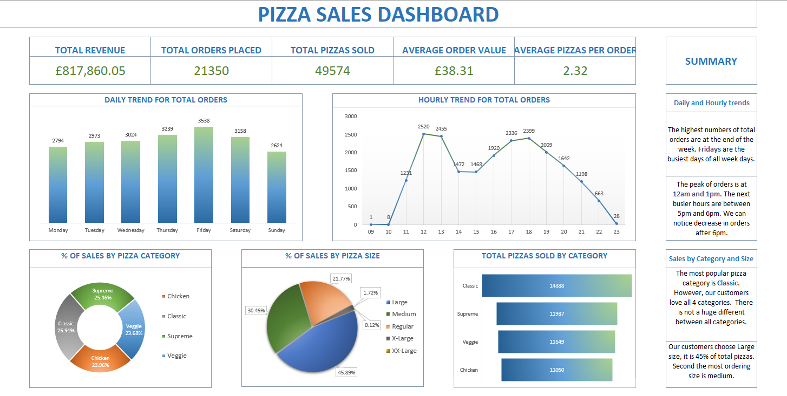
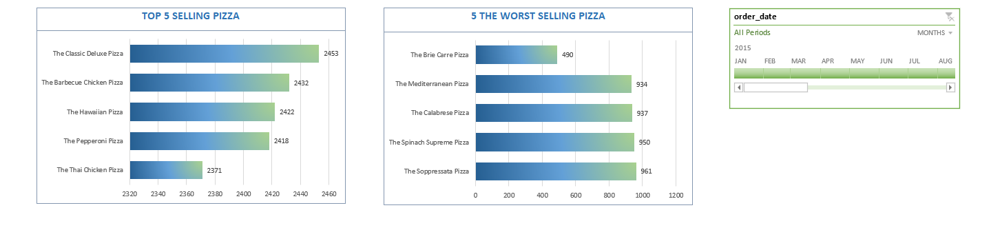

Data Exploration in SQL and visualization in Microsoft Excel
Data set downloaded from Youtube.com
I. Problem Statement:
The objective is to construct a comprehensive dashboard featuring KPIs and charts to illuminate insights and discern significant trends within our pizza restaurant's operations. The analysis should address the following key aspects:II. Goals:
KPI’s REQUIREMENT We need to analyze key indicators for our pizza sales data to gain insights into our business performance. Specifially, we want to calculate the following mistakes: 1. Total revenue: The sum of the total price of all pizza orders. 2. Average order value: The average amount spent per order, calculated by dividing the total revenue by the total number of orders. 3. Total pizzas sold: The sum of the quantities of all pizzas sold. 4. Total orders: The total number of order placed. 5. Average pizzas per order: The average number of pizzas sold per order, calculated by dividing the total number of pizzas sold by the total number of orders. CHARTS We would like to visualize various aspects of our pizza sales data tot gain insights and understand key trends. We have identified the following requirements for creating charts: 1. Daily trend for total orders: Create a bar chart that displays the daily trend of total orders over a specific time period. This chart will help us identity any patterns or fluctuations in order volumes on a daily basis. 2. Hourly trend for total orders: Create a line chart that illustrates the hourly trend of total orders throughout the day. This chart will allow us to identify peak hours or periods of high order activity. 3. Percantage of sales by pizza category: Create a pie chart that shows the distribution of sales across different pizza categories. This chart will provide insights into the popularity of various pizza categories and their contribution to overall sales. 4. Percentage of sales by pizza size: Generate a pie chart that represents the percentage of sales attributable to different pizza sizes. This chart will help us understand customer preferences for pizza sizes and their impact on sales. 5. Total pizzas sold by pizza category: Create a funnel chart that presents the total number of pizzas sold for each pizza category. This chart will allow us to compare the sales performance of different pizza categories. 6. Top 5 best sellers by total pizza sold: Create a bar chart highlighting the top 5 best-selling pizzas based on the total number of pizzas sold. This chart will help us identify the most popular pizza options. 7. Bottom 5 worst sellers by total pizza sold: Create a bar chart showcasing the bottom 5 worst-selling pizzas based on the total number of pizzas sold. This chart will enable us to identify underperforming or less popular pizza options.III. Data Cleaning:
- Imported data from the pizza_db database into an Excel sheet. - Conducted data cleaning, including standardizing size shortcuts (e.g., "S" to "small"). - Introduced a new column, ORDER_DAY, to facilitate the examination of daily trends.
IV. Data Exploration:
V. Data Visualization:
 VI. Conclusions:
The highest numbers of total orders are at the end of the week. Fridays are the busiest days of all week days. The peak of orders is at 12am and 1pm. The next busier hours are between 5pm and 6pm. We can notice decrease in orders after 6pm. The most popular pizza category is Classic. However, our customers love all 4 categories. There is not a huge different between all categories. Our customers choose Large size, it is 45% of total pizzas. Second the most ordering size is medium.